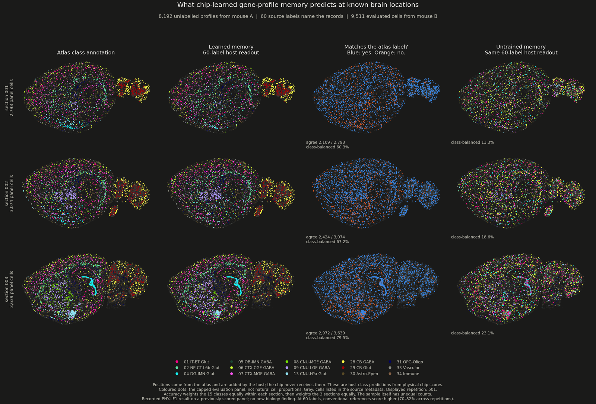
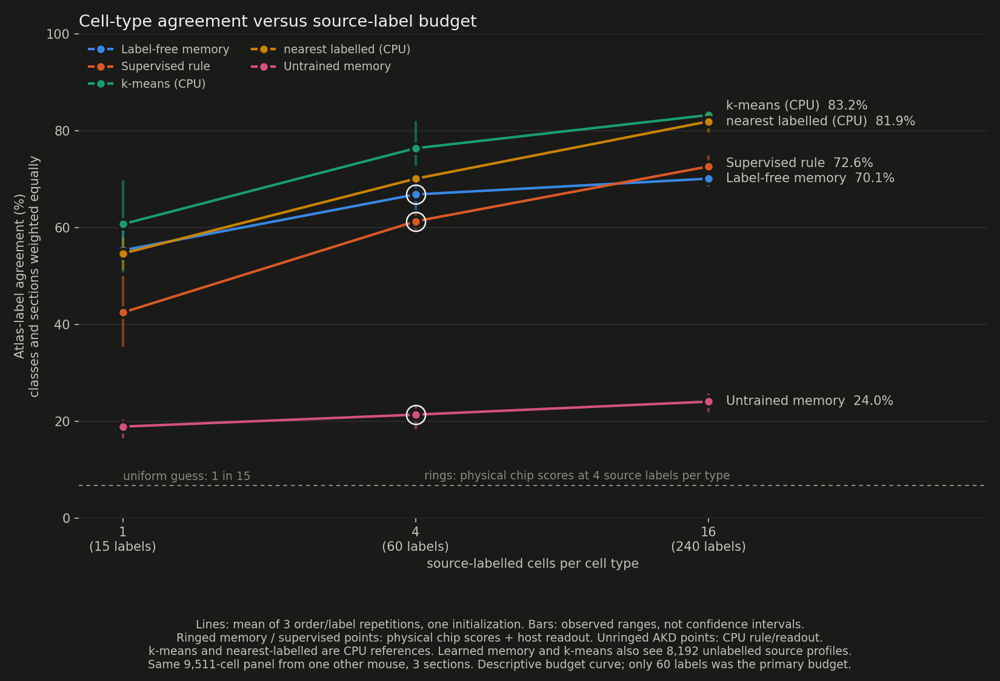

One learning layer on a BrainChip AKD1500 learned from 8,192 encoded profiles of one mouse's brain cells, with no cell-type labels. Sixty labelled examples were used only to name its memory records. The chip then scored 9,511 cells from a different mouse; the host converted those scores into cell-type predictions using the fixed naming rule.
Numbers
Agreement with the atlas cell-type labels, balanced across classes and sections, on the same 9,511-cell panel:
| Repetition | Label-free memory | Untrained memory | Supervised native control |
|---|---|---|---|
| 1 (LF arm filmed live) | 69.0% | 18.3% | 61.1% |
| 2 | 67.9% | 23.1% | 59.5% |
| 3 | 63.6% | 22.6% | 63.3% |
These are three stream-order and naming-example repetitions from one initialization, not three independent animals. The 60 source labels cover 15 cell types, four examples per type. The target panel is a capped, class-balanced sample from three sections of one other mouse; its scores do not estimate natural whole-brain cell proportions.
The filmed repetition covers the label-free arm only. It matched the earlier run across all 17,763 chip calls and 18 memory readbacks, and all 9,511 decoded predictions matched the reference. The untrained and supervised columns come from the earlier physical study.


Limits
- The host encodes the inputs, names the memory records from the 60 examples, and draws the map.
- The live run is an exact repeat on the same panel, not perfect atlas classification and not a new generalization test.
- Conventional exemplar and k-means software controls scored higher than the chip's label-free memory.
- No speed or energy advantage is claimed or measured here.
Since then: a streaming comparison (2026-11-16)
We compared the unchanged AKD label-free learning rule with fixed single-pass streaming baselines on the same encoded cells and the same 60 labels. The native rule scored 74.2–82.1% on the exposed development panel and clearly improved over untrained memory, but missed our three-percentage-point tolerance to minibatch k-means in all three repetitions and to online k-means in two. It met the reservoir comparison in all three. We stopped at development and left the new-cell confirmation panel unused. This was a CPU comparison of the hardware-validated rule; it does not measure chip speed or energy.
This used the source-mouse development panel, not the 9,511-cell target panel above. The float-centre baselines use more memory bytes; matching passes, record count and labels is not byte matching. Result table, scope and audit hashes.
Check it yourself
- The November release: the video, the figures, small result tables and a software-only verification script, with SHA-256 sums.
- The release notes, including three other November AKD1500 results.
- On X: the live-capture post.